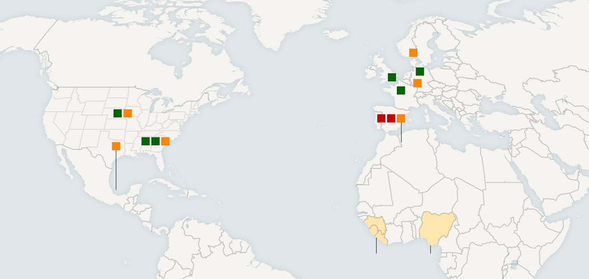

After reading up and using all of this information I've gathered, I don't think people need to worry as much as they do. Here in America we have only had a handful of cases of people being infected with the Ebola virus. The good news is that the virus has not spread to any new states and is still contained in Texas. This means that we have a better chance of stopping the virus before it can get any worse. On the other hand, Ebola currently cannot travel by air and water. This means that the only way to obtain the actual disease is from blood and certain types of meats which I mentioned before in the Information Page. The only downfall with the disease is that you may not show signs for up to 21 days. This just means once you notice the signs you must go to the doctors right away, plus you have to think of anyone that you could of possibly infected. As long as you know the signs you will not have to worry. This link will show some cases and what happens if you get Ebola. Science always advances when we have a war or an very serious diseases such as Ebola. The effort that scientist are putting in towards this virus is very great and this is why I think people shouldn't worry as much as they are.
Map of Infected Areas
Red =Died |Orange =In Treatment |Green =Recovered